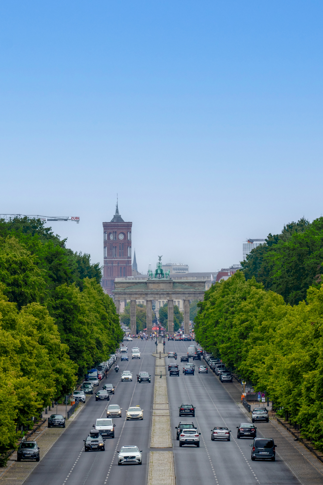

Greener Cities
facebook
download image
belal2010cu@gmail.com
01863971441

Cities are home to about 50 percent of the world’s population, but they generate 80 percent of our planet’s greenhouse gases – the primary human contributor to global warming and climate change. As a result, many communities are experiencing increasing threats of fires, droughts, floods, severe weather, population displacement, and others. Community leaders and citizens around the world must be informed, motivated, coordinated and empowered to be part of the solution. Unfortunately, many communities and many innocent lives have already been lost.
Unfortunately, few local communities have the ability to engage their citizens in developing a common vision around this issue. Some need guidance on a collaborative process to achieve consensus. Others need help outlining the spectrum of actions that they can take to cut pollution, save energy, conserve water and promote health and sustainability. Other communities around the world already are in contingency mode and need help mitigating the impacts of climate change on their homes and businesses.
Many community leaders need coaching to bring all stakeholder groups to the table to discuss opportunities, threats, resources, and priorities. As communities begin planning, they need comprehensive guidance regarding the full range of possible actions to consider in their plans. Many communities are limiting their sustainability visions to the energy efficiency of city buildings and vehicle fleets. They need to learn from other cities that have embraced a broader spectrum of possible actions such as investments, tax policies, water use, tree management, open space, expanded recycling efforts, and many others.
“Where national governments can’t or won’t lead, cities will,” said former Toronto Mayor David Miller.
This online portal will include success stories, best practices, decision matrices, networking opportunities, and many other resources, including a comprehensive workbook that each community and individual organizations can complete on their own to help define the appropriate local options and priorities. These resources will help guide each community through the evaluation and decision-making process.
Community groups and governments will use the portal to evaluate local issues such as recycling, energy efficiency, transportation, alternative energy, reforestation, buying local, water conservation, and many other considerations. The process will encourage the development of local work groups and help to determine where each community should put its efforts for maximum impact.
Most importantly, we will encourage leaders from around the world to post case studies, best practices, research, results, advice, and other resources. User-generated content will become the backbone of the site.
Secondly, we will create the “Champions of Sustainability” to recognize cities and communities around the world on at least three vital fronts every year. The award entries will help feed best practices and networking resources into the online portal.
Each year, we will announce a call for entries around the world. Civic leaders and other stakeholders from around the world will converge upon our host city for a 3-4 day event, including local tours to innovative sites and facilities, trade show, presentations, workshops and a black-tie award ceremony. (We will finalize the dates and agenda in cooperation with our partners.)
We seek the involvement of government, communities, corporations, universities, and NGO’s from around the world.
authorname:sheikh ahmed belal